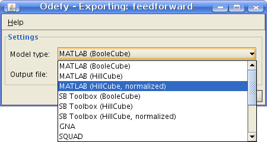

Model exporting
<< Back to main page
Odefy can convert Boolean models to a variety of foreign formats, including both discrete and continuous modeling frameworks. The following table gives an overview of the different export formats and the respective Odefy functions.
| Export format | Export type | Odefy function |
| GNA | discrete | SaveGNAModel |
| SQUAD | discrete | SaveSQUADModel |
| PBN toolbox | discrete | CreateBNPBNModel |
| MATLAB .m file | continuous | SaveMatlabODE |
| SB toolbox | continuous | CreateSBToolboxModel |
| SBML | continuous | SaveSBML |
| R | continuous | SaveRModel |
Check out help [function] for detailed usage information on each of these functions.
Graphical user interface
A graphical user interface to the export feature of Odefy is also available:

You can either call the dialog with the model you want to export
Export(model)
or without any arguments to select a model from a file:
Export
(see also: Model creation: Loading models)